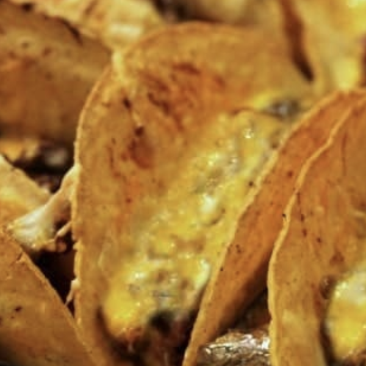

Cheesy Baked Tacos
Tacos so easy, they'll munch your face off.
We need to stress that whatever happens to you as a result of consuming Cheesy Baked Tacos is your responsibility. You've been warned, and you can view our legal page for more info.
Ingredients
- 1 tbsp. vegetable oil
- 1 onion, chopped
- 1 tbsp. ground cumin
- kosher salt
- Freshly ground black pepper
- 2 c. Shredded chicken
- 1 can green chilis
- 1 c. Favorite Salsa
- 1 Can Refried Beans
- 1 1/2 c. shredded pepperjack
- Chopped fresh cilantro, for garnish
Directions
- Preheat oven to 350º. In a large skillet over medium heat, heat oil. Add onion and cook until tender, 6 minutes, then add cumin and season with salt and pepper. Stir until combined. Add chicken, green chilis, and salsa and stir until combined and heated through.
- In a baking dish, spread a thin layer of refried beans (to help the taco shells stand up!). Spoon remaining refried beans into the bottom of a taco shell and top with chicken mixture. Place in baking dish. Repeat with remaining taco shells and ingredients, tightly standing up the taco shells in the dish.
- Top all over with cheese.
- Bake until cheese is melted, 10 minutes.
- Garnish with cilantro and serve.
Photos
